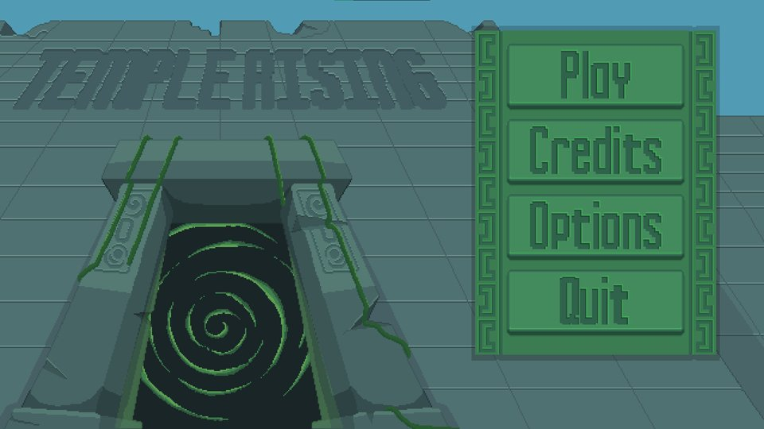
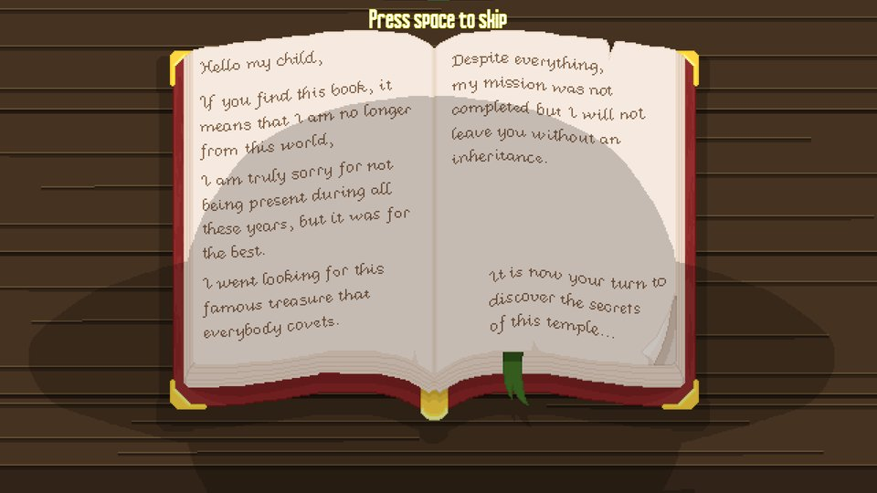
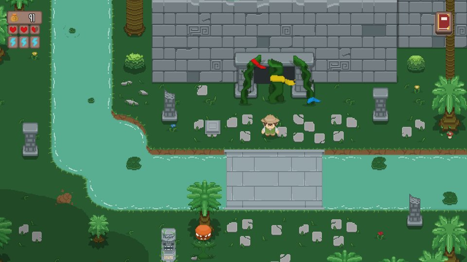
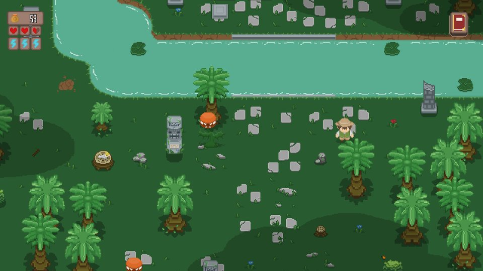
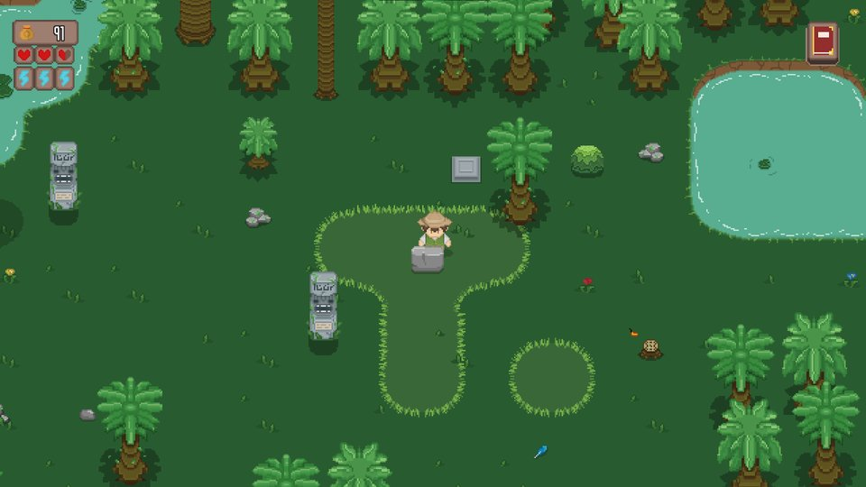
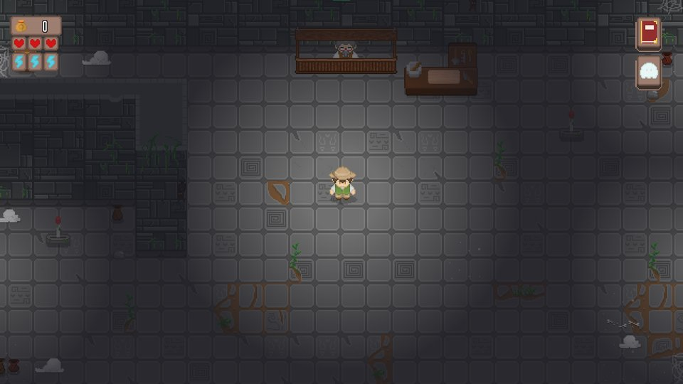
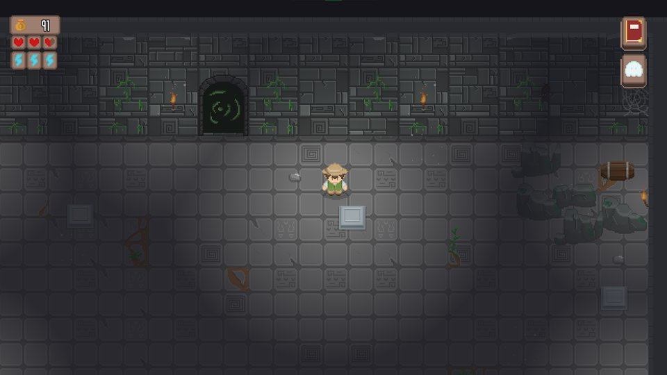
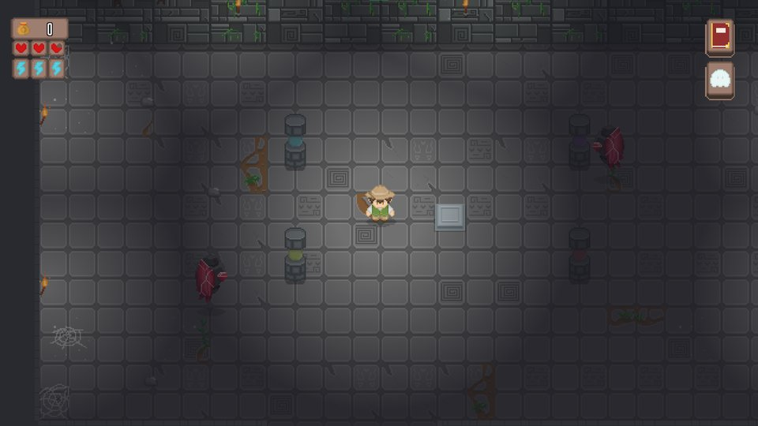
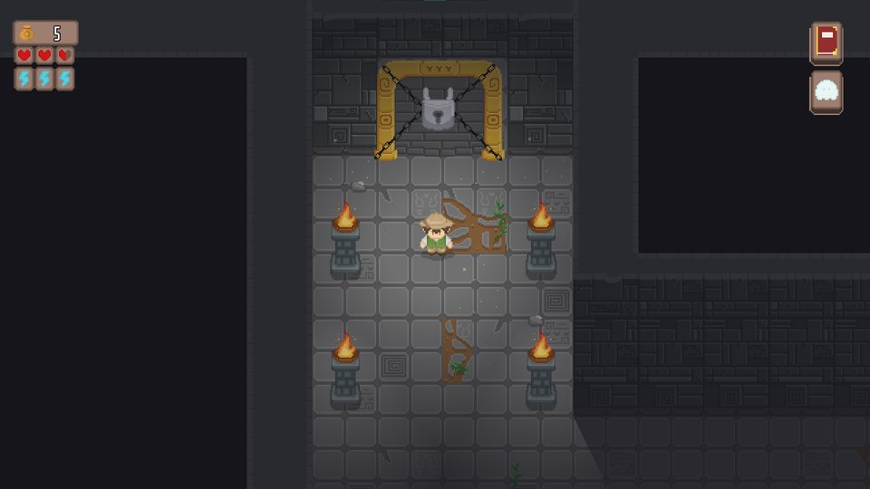
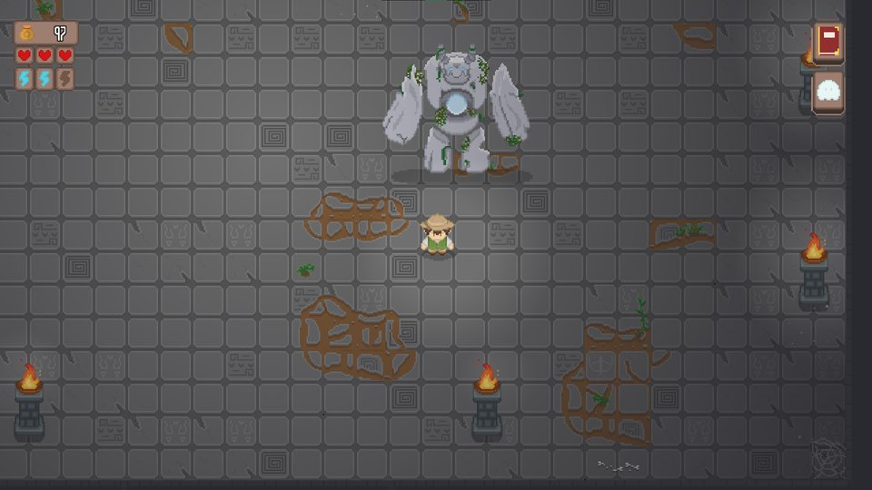

← Back to projects
1 / 11
2024
Temple Rising
2D action RPG built with SFML over a two-month academic project, developed in C with a team of eight programmers.
- Implemented the player movement system, enemy behavior, and a complete dialogue system
- Managed all map collisions using Tiled and integrated animations across gameplay systems
- Built the full weapon mechanics and handled sound integration
C
SFML
Team project









